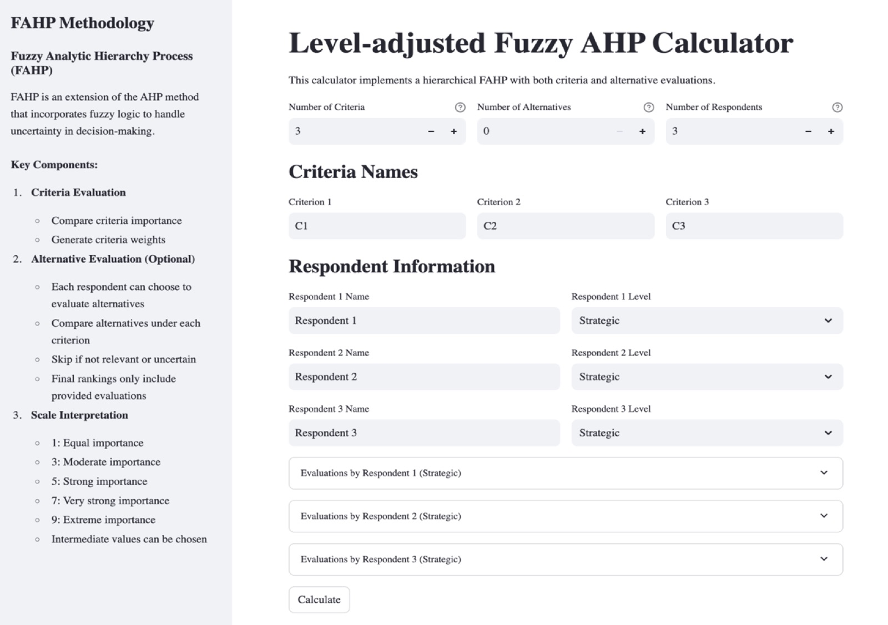
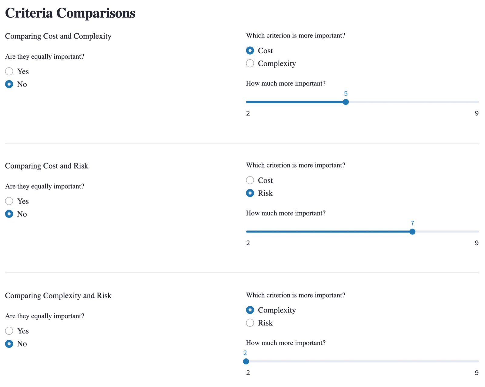
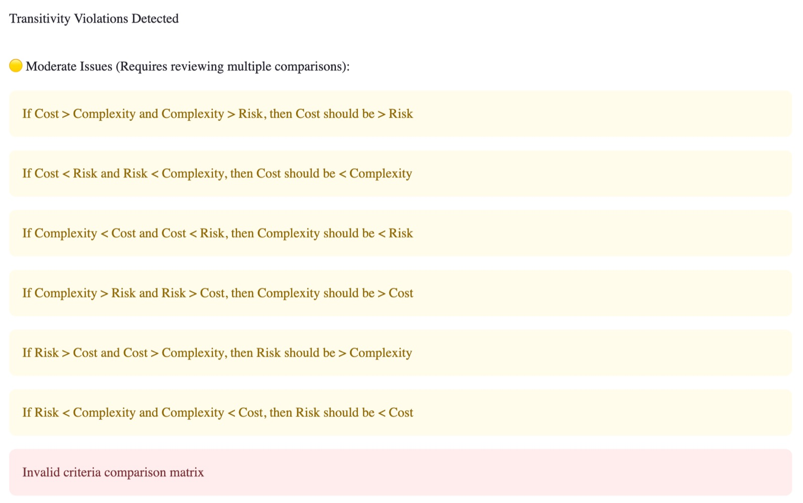
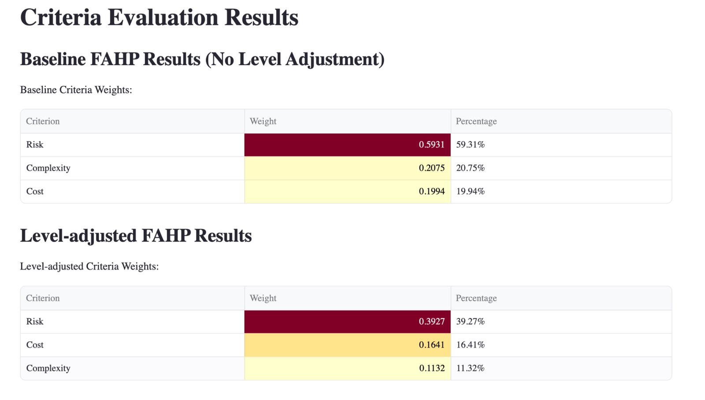
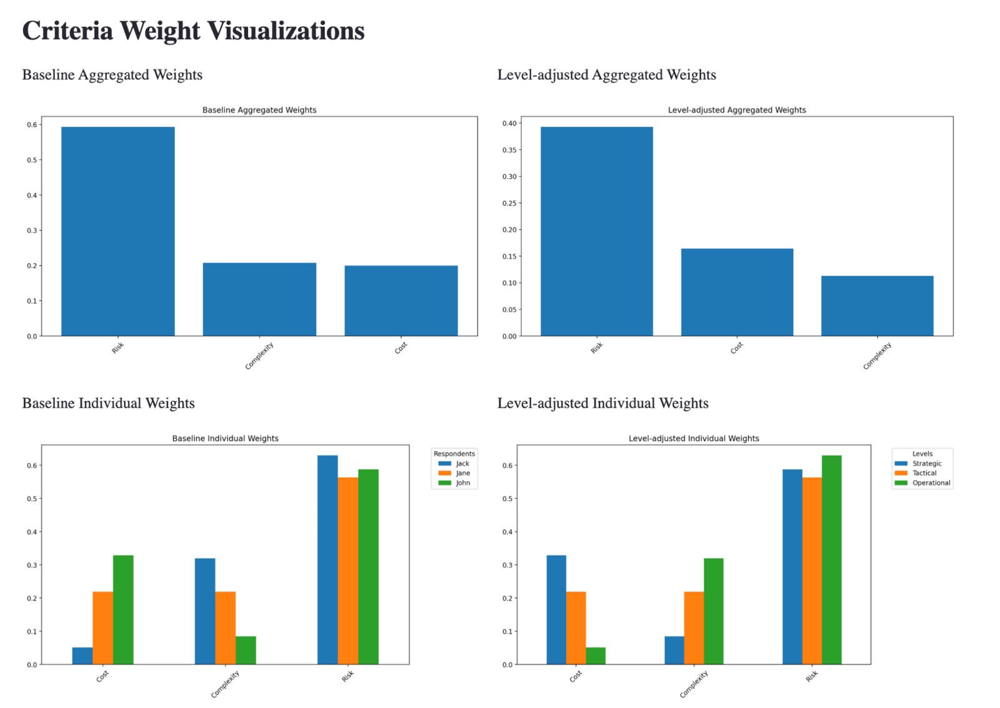
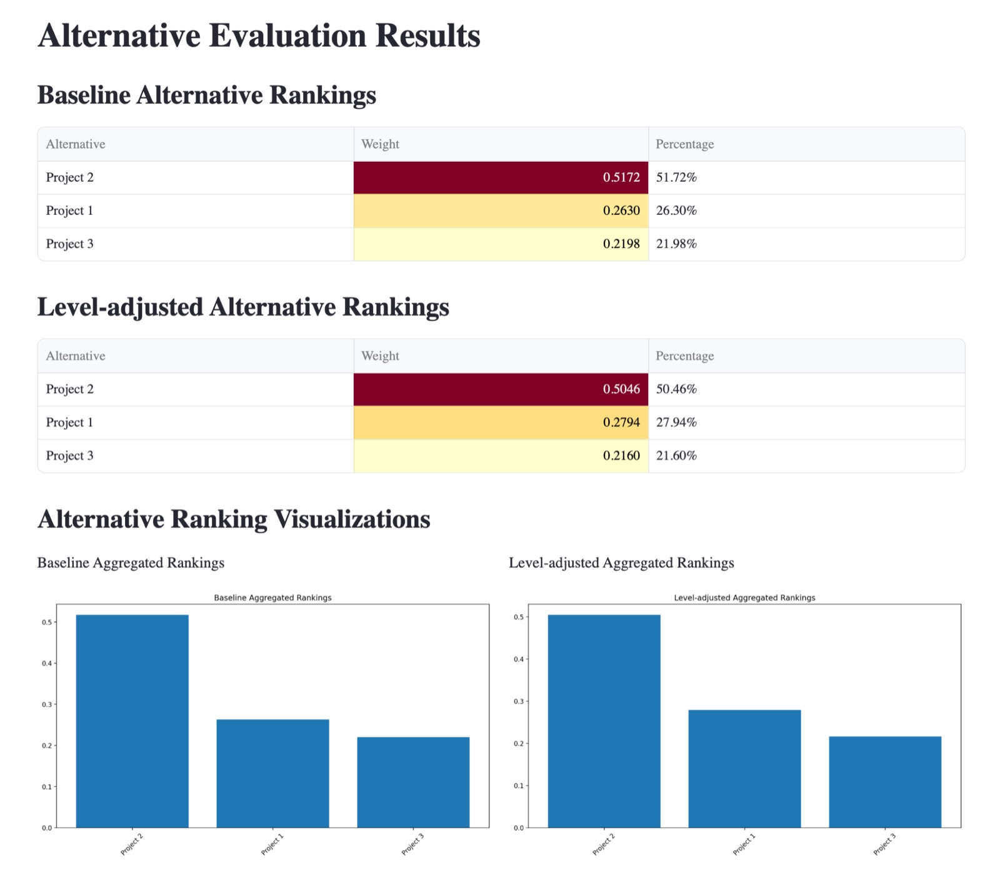

Acesse
Baixe o FAHP-L no GitHub
O projeto
Escolher um fornecedor, priorizar projetos, decidir onde investir: decisões estratégicas envolvem vários critérios ao mesmo tempo e dependem do julgamento de pessoas. O Fuzzy AHP é um dos métodos mais usados para organizar esse tipo de escolha. Os critérios e as alternativas são comparados dois a dois, e os julgamentos, que nunca são exatos, são tratados com números fuzzy, próprios para lidar com a imprecisão de respostas como "um pouco mais importante" ou "muito mais importante".
O método tradicional, porém, trata todas as respostas como se valessem o mesmo. Num estudo com diretores, gerentes e equipes operacionais, a opinião de quem conhece a estratégia da organização tem o mesmo peso de quem a vê de longe. Quando há poucos especialistas e muitos respondentes de nível operacional, o resultado pode se distorcer.
O FAHP-L (L de level, nível) resolve esse problema. Cada respondente é identificado como estratégico, tático ou operacional. As respostas do nível estratégico servem de referência, e as dos níveis tático e operacional são ajustadas de forma proporcional conforme se aproximam ou se afastam dessa referência. O aplicativo entrega dois resultados lado a lado: o do Fuzzy AHP tradicional e o ajustado por nível. Assim o pesquisador vê não só qual opção ganhou, mas também de quem são as opiniões que pesaram.
O ajuste nasceu na prática. Ele já havia sido feito à mão em estudos publicados sobre resistência à mudança na implantação de tecnologia da informação, terceirização no setor público e decisões no agronegócio. Fazer isso em planilhas era demorado e sujeito a erro. O aplicativo também nasceu da sala de aula: numa disciplina de análise de decisão multicritério da pós-graduação em Administração, os alunos aprendem os métodos fazendo as contas à mão, e depois de dominar a lógica precisam de uma ferramenta que faça os cálculos com segurança nas suas dissertações e teses.
O aplicativo foi apresentado como Produto Técnico-Tecnológico (PTT) no EnANPAD 2025, com o trabalho FAHP-L: A Level-Adjusted Fuzzy AHP App for Strategic Decision Modeling in Management Research, publicado nos anais da ANPAD.
Tomada de decisão
Modela decisões estratégicas com vários critérios e alternativas, tratando a imprecisão dos julgamentos humanos.
02Estratégia
Reconhece que a hierarquia importa: quem está no nível estratégico tem uma visão da decisão que os outros níveis não têm.
03Ensino e pesquisa
Transforma num aplicativo um cálculo que antes era manual, para alunos, pesquisadores e gestores, sem precisar programar.






Como se usa
- Critérios e alternativas
O usuário define até 10 critérios e até 10 alternativas. Se não houver alternativas, o aplicativo calcula só o peso dos critérios.
- Respondentes e seus níveis
Cada respondente recebe um nome e um nível: estratégico, tático ou operacional. É o nível que define como suas respostas serão ajustadas.
- Comparações par a par
Cada respondente compara os critérios entre si e, se quiser, as alternativas dentro de cada critério, com botões e controles deslizantes.
- Checagem de coerência
Cada matriz de comparações é verificada na hora. Contradições lógicas são apontadas com sugestões de correção, sem precisar recomeçar.
- Resultados
Com um clique, o aplicativo calcula os pesos e o ranking pelo método de análise de extensão de Chang, nos dois modelos, com tabelas coloridas e gráficos.
- Exportação
Todos os resultados vão para uma planilha do Excel, com abas separadas para pesos, rankings e detalhes de cada modelo, para documentar e reproduzir a análise.
Para quem é
Para pesquisadores e alunos de pós-graduação que usam métodos multicritério, principalmente quando há poucos especialistas disponíveis ou quando eles estão em níveis diferentes da organização. E para gestores públicos, consultores e organizações sem fins lucrativos que precisam priorizar projetos, escolher fornecedores ou distribuir recursos ouvindo pessoas de vários níveis. O uso vai além da estratégia: governança, operações, políticas públicas e gestão da inovação são campos onde decisões complexas envolvem atores com graus diferentes de autoridade.
O código é aberto e gratuito: qualquer pessoa pode baixar, usar e adaptar o aplicativo em pesquisa e ensino, a partir do repositório no GitHub. Ele roda no computador do próprio usuário, com a interface aberta no navegador. Usar não exige saber programar, e o aplicativo não guarda dados pessoais: os arquivos gerados ficam com o usuário.
Para citar o aplicativo: Martins, F. S. (2025). Level-adjusted enhanced Fuzzy AHP calculator [Software]. https://github.com/fellipemartins/Enhanced-Fuzzy-AHP-Calculator
Próximos passos
- Pesos sob medida
Deixar o pesquisador definir as regras de ajuste por nível, em vez de usar as proporções fixas atuais.
- Sensibilidade e robustez
Simular o quanto o resultado muda quando os julgamentos variam.
- Consenso
Um módulo para apoiar a construção de consenso em decisões de grupo.
- Coleta online
Uma versão com login de respondentes, para aplicar o questionário a distância em estudos maiores.
- As razões por trás das escolhas
Integração com ferramentas qualitativas, para registrar por que cada respondente comparou como comparou.
Estágio de inovação
Hoje o FAHP-L está na fase 3: o aplicativo funciona, tem o código aberto ao público, já foi usado em pesquisa e em sala de aula e passou pela avaliação de um encontro científico. A meta é chegar à fase 4, com as novas funções e um uso regular por pesquisadores e organizações fora do laboratório.
- 01Ideação e conceito
Encaixe entre problema e solução, proposta de valor inicial, primeira estimativa de mercado.
TRL 1–2 · IRL 1–2 - 02Pré-seed e validação
Protótipos de baixa fidelidade, conversa com potenciais usuários, análise da concorrência.
TRL 3–4 · IRL 3–4 - Hoje03Seed e MVP
Produto mínimo viável lançado, primeiros usuários e pilotos reais.
TRL 5–6 · IRL 5–6 - Meta04Crescimento inicial
Encaixe entre produto e mercado comprovado, modelo repetível, custos previsíveis.
TRL 7–8 · IRL 7–8 - 05Escala
Operação em grande volume, canais otimizados, expansão geográfica.
TRL 9 · IRL 9 - 06Maturidade
Posição consolidada no mercado, receitas previsíveis, governança corporativa.
Inovação contínua
Classificação pela Unified Concept-to-Market Innovation Taxonomy. TRL é o nível de maturidade da tecnologia e IRL, o nível de prontidão para investimento.